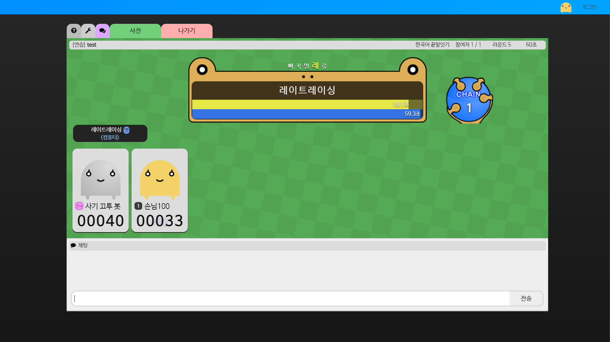
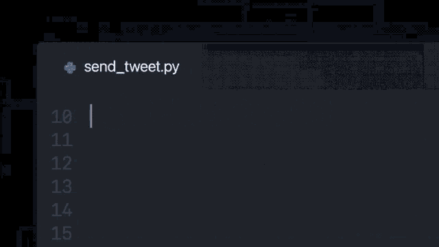
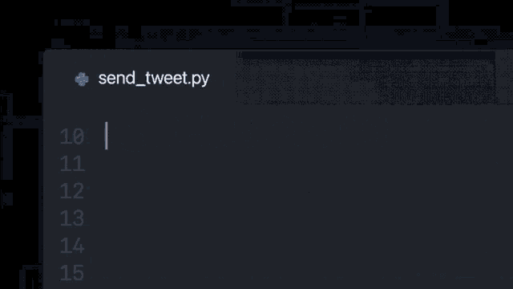

권유호
꿈 : 개발자
권유호
꿈 : 개발자
소개
🏷️ 이름
권유호
🏫 학력
안일중학교 재학중
😮 흥미
코딩
💭 꿈
개발자
🤔 관심
타입스크립트
💔 연애
해당사항없음
💻 코딩
🟦 타입스크립트
🎮 게임
🏫 학생
남녀친 구함
🎄 메리 솔로스마스
쪼리핑
👨💻 벤치마킹 인물
쪼리핑
❗ 알게 된 계기
초등학교 2학년 때 방과 후로 컴퓨터를 했는데, 어떤 형이 끄투를 하자고 해서 알게 됨
🏆 업적
블로그 사이트 달달소, 노래방 검색 사이트 쏘리들, 리듬게임 자바! 그리고 방금 나온 끄투도 만듦
✨ 본받고 싶은 점
끄투는 웹게임인데 웹으로 끝말잇기, 십자말풀이 등을 자바스크립트를 이용해 높은 품질의 게임을 만든 실력

내가 왜 코딩을 할까
오류가 나면 조금 화가 나긴 하지만 잘 풀려서 완성품을 보면 기분이 좋기 때문일 것 같다
꿈을 이루려면 뭘 해야할까?
✏️ 공부
React, Vue, Golang
💳 자격증
정보처리기사

이 직업이 무사하겠지?
🪨 걸림돌
AI로 코딩을 해주는 Github Copilot  ❗ 문제
오류가 나거나 원하는 방향으로 출력 ❌
⚖ 결론
최소한의 오류를 수정하는 인력이 있을 듯

❗ 문제
오류가 나거나 원하는 방향으로 출력 ❌
⚖ 결론
최소한의 오류를 수정하는 인력이 있을 듯

어 잠깐만 생각해보니까
생각해보니까 이걸로 템플릿 만들어서 JSON으로 간편하게 수정할 수 있게 하면 재밌겠는데?